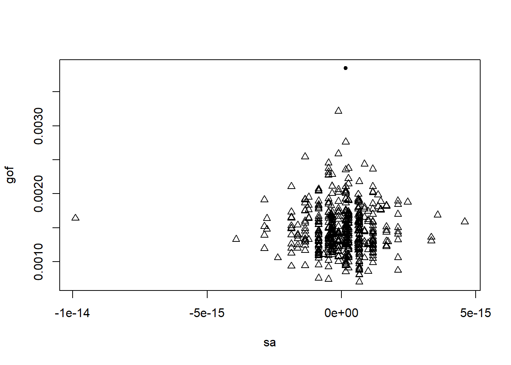
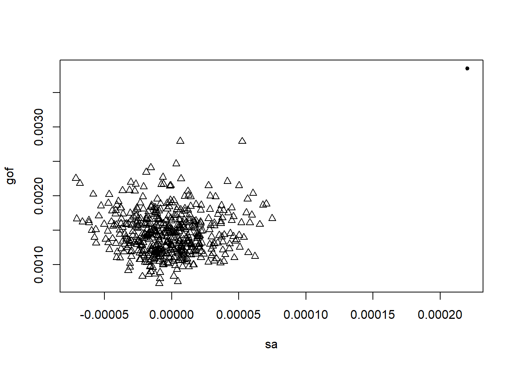

Hw06 - Regional Count Data Homework (Spatial Autocorrelation)
Problem 1
The nc.rda file contains information related to SIDS cases in North Carolina. The object includes nc.sids, a spatial data frame compatible with the sf package with 20 variables measured for 100 counties. It contains data given in Cressie (1991, pp. 386-9), Cressie and Read (1985), and Cressie and Chan (1989) on sudden infant deaths in North Carolina for 1974-78 and 1979-84. The nc.rda objects also contains the neighbor list given by Cressie and Chan (1989) omitting self-neighbors (nb89), and the neighbor list given by Cressie and Read (1985) for contiguities (nb85). The nc.sids object contains the following variables:
SP_ID: SpatialPolygons ID
CNTY_ID: county ID
east: eastings, county seat, miles, local projection
north: northings, county seat, miles, local projection
L_id: Cressie and Read (1985) L index
M_id: Cressie and Read (1985) M index
names: County names
AREA: County polygon areas in degree units
PERIMETER: County polygon perimeters in degree units
CNTY_ Internal county ID
NAME: County names
FIPS: County ID
FIPSNO: County ID
CRESS_ID: Cressie papers ID
BIR74: births, 1974-78
SID74: SID deaths, 1974-78
NWBIR74: non-white births, 1974-78
BIR79: births, 1979-84
SID79: SID deaths, 1979-84
NWBIR79: non-white births, 1979-84
(a)
Use Moran’s I to test whether there is evidence of positive spatial autocorrelation for the SID74 variable under the normal assumption. Use a binary weights matrix for the nb85 neighbor relationship.
Solution
library(spdep)
Loading required package: spData
The legacy packages maptools, rgdal, and rgeos, underpinning the sp package,
which was just loaded, will retire in October 2023.
Please refer to R-spatial evolution reports for details, especially
https://r-spatial.org/r/2023/05/15/evolution4.html.
It may be desirable to make the sf package available;
package maintainers should consider adding sf to Suggests:.
The sp package is now running under evolution status 2
(status 2 uses the sf package in place of rgdal)
To access larger datasets in this package, install the spDataLarge
package with: `install.packages('spDataLarge',
repos='https://nowosad.github.io/drat/', type='source')`
Loading required package: sf
Linking to GEOS 3.11.2, GDAL 3.6.2, PROJ 9.2.0; sf_use_s2() is TRUE
library(sf)library(smerc)
# This research was partially supported under NSF grants 1463642 and 1915277
load(file="nc.rda")### moran's i# assume adjacency weights (w_ij = 1 if regions i and j share a boundary)# proximity matrix, B = binary adjacency matrix. W is row standardized.w =nb2mat(nb85, style ="B")# see ?nb2listw for more options# proximaty matrix in list formatlw =nb2listw(nb85, style ="B")# base test w/ normality approximation for p-valuemoran.test(nc.sids$SID74, listw = lw, randomisation =FALSE)
Moran I test under normality
data: nc.sids$SID74
weights: lw
Moran I statistic standard deviate = 1.9891, p-value = 0.02335
alternative hypothesis: greater
sample estimates:
Moran I statistic Expectation Variance
0.112754956 -0.010101010 0.003814926
(b)
Use Moran’s I to test whether there is evidence of positive spatial autocorrelation for the SID74 variable under the randomization assumption. Use a binary weights matrix for the nb85 neighbor relationship.
Solution
# base test w/ randomization approximation for p-valuemoran.mc(nc.sids$SID74, listw = lw, nsim=499)
Monte-Carlo simulation of Moran I
data: nc.sids$SID74
weights: lw
number of simulations + 1: 500
statistic = 0.11275, observed rank = 488, p-value = 0.024
alternative hypothesis: greater
(c)
Use the Moran’s I statsitic to test whether there is evidence of positive spatial autocorrelation for the SID74 variable under the CRH. Note: use the standard Moran’s I statistic, but use a Monte Carlo test to test the constant risk hypothesis. Use a binary weights matrix for the nb85 neighbor relationship and 499 simulated data sets. Use the BIR74 variable for the population size of each region.
Solution
# base test w/ Monto Carlo p-value, simulating data under constant risk hypothesis# some preliminariesN =length(nc.sids$SID74) # number of regionsy = nc.sids$SID74 # number of casesn = nc.sids$BIR74 #population sizesr <-sum(y)/sum(n) # estimated riskrni <- r * n # expected per region# observed moran's statisticnsim =499t0 =moran(y, listw = lw, n = N, S0 =Szero(lw))$I# simulate data under CRHtsim =numeric(nsim)# calculate moran's i for poisson data simulated under crhfor (i in1:nsim) { tsim[i] =moran(rpois(N, rni), listw = lw, n = N, S0 =Szero(lw))$I}# p-value for moran's i constant risk monte carlo test(sum(tsim >= t0) +1)/(nsim +1)
[1] 0.228
(d)
Use the constant risk version of Moran’s I (Walter 1992) to test whether there is evidence of positive spatial autocorrelation for the SID74 variable under the CRH. Use a binary weights matrix for the nb85 neighbor relationship and 499 simulated data sets. Use the BIR74 variable for the population size of each region.
Solution
smerc::morancr.test(y, pop = n, w = w)
Walter (1992) Constant-risk Moran's I
null hypothesis: rho = 0
alternative hypothesis: rho > 0
test statistic: 0.56
p-value: 0
nsim: 499
simulation procedure: multinomial
(e)
How does the Moran’s I result change if we use the constant risk version of Moran’s I along with the constant risk hypothesis (instead of the standard Moran’s I statistic with the CRH)? Why does this change occur?
Solution
While our conclusion does not change between the standard Moran’s I and the constant risk version, we do see a difference between the test statistic’s value. This is due to the fact that the standard Moran’s I does not account for the spatial heterogeneity of regional at-risk population sizes often found in public health data. In other words, any evidence of autocorrelation identified with the standard Moran’s I could just be due to relationships between population sizes.
(f)
The intercentroid distances for the North Carolina data are between 0.12 and 8.22 units. In the context of Tango’s recommended weights matrix, a very weak spatial correlation has \(\kappa=0.1\) and a very strong spatial correlation has \(\kappa=7\). Perform Monte Carlo tests using using Tango’s index with Tango’s recommended weights with both \(\kappa=0.1\) and \(\kappa=7\) for the SID74 variable with 499 simulated data sets. For the centroid coordinates, use the east and north columns of nc.sids. Interpret your results in the context of the problem.
The monte carlo p-value and the positive sign of the index implies that there is evidence of clustering at both small and large scales (k=.1 and k=7).
(g)
Compare the goodness-of-fit and spatial autocorrelation components of Tango’s statistic for the observed and simulated data in a plot. (Do this for both values of \(\kappa\)). Are the patterns similar for the weak versus strong spatial autocorrelation? Or does the value of \(\kappa\) dramatically impact the relative importance of the goodness-of-fit and spatial autocorrelation components?
Solution
plot(tango_1)

plot(tango_7)

The plots show that for k=0.1 there is evidence of a poor fit or weak autocorrelation while the k=7 plot indicates evidence of strong autocorrelation. It appears that the value of kappa dramatically impacts the relative importance of the two components.
Problem 2
In this problem you are going to implement a portion of the spatial scan method. You can only use functions/packages loaded with by default by R (stats, graphics, grDevices, utils, datasets, methods, base). If you don’t have to load a package to access the functionality, then you should be okay.
Suppose you have regional count data with the following characteristics:
region_id
x
y
cases
population
1
1.00
2.00
1
5
2
1.00
1.00
2
3
3
2.00
2.01
3
8
4
1.75
1.75
2
4
(x, y) define the centroid of each region.
Calculate the Poisson spatial scan statistic under the CRH assuming the constraint that no more than half the total population can be in a potential cluster/window.
Break up your solution into parts:
(a)
Compute the inter-centroid distance matrix between all centroids. Return the sample mean of this matrix.
Using the distance matrix above, determine all possible windows (in terms of the region ids each window includes) in terms of nearest neighbors (the largest would have 3 non-inclusive neighbors). Print the complete list of windows.
Warning in dtf$windows[i] <- temp_w: number of items to replace is not a
multiple of replacement length
Warning in dtf$windows[i] <- temp_w: number of items to replace is not a
multiple of replacement length
Warning in dtf$windows[i] <- temp_w: number of items to replace is not a
multiple of replacement length
Warning in dtf$windows[i] <- temp_w: number of items to replace is not a
multiple of replacement length
For each remaining window, compute \(Y_{in}\), \(Y_{out}\), \(E_{in}\), \(E_{out}\). Print a data frame/matrix with the columns \(Y_{in}\), \(Y_{out}\), \(E_{in}\), \(E_{out}\).
Compute the statistic \(\left(\frac{Y_{in}}{E_{in}}\right)^{Y_{in}} \left(\frac{Y_{out}}{E_{out}}\right)^{Y_{out}} I\left(\frac{Y_{in}}{E_{in}} \geq \frac{Y_{out}}{E_{out}}\right)\) for each remaining window.